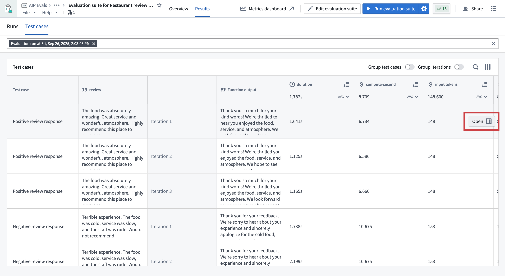
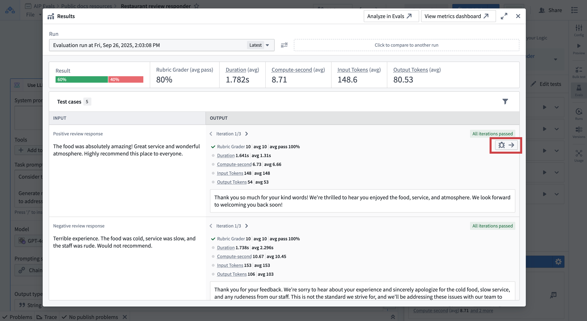
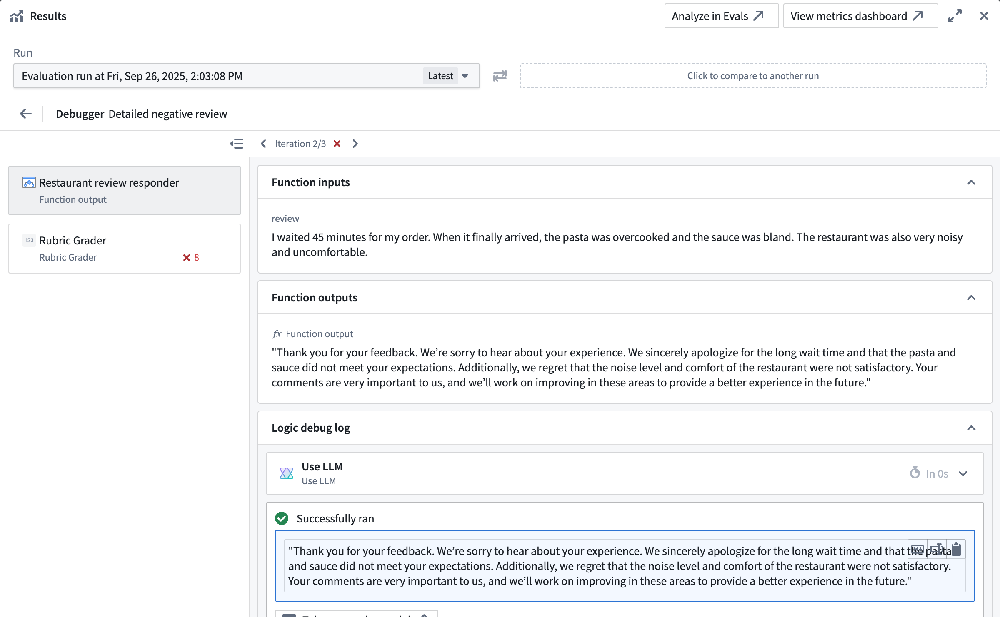
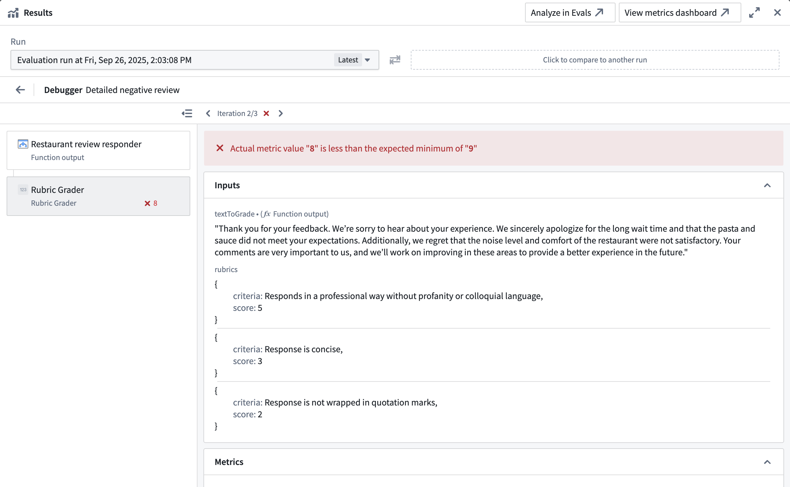
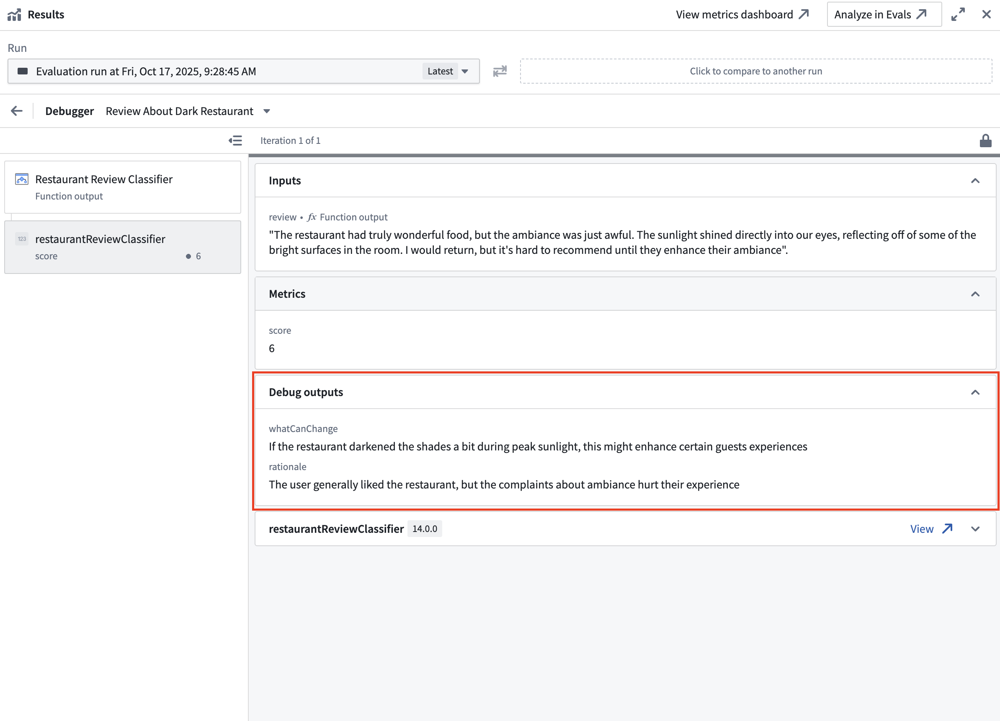
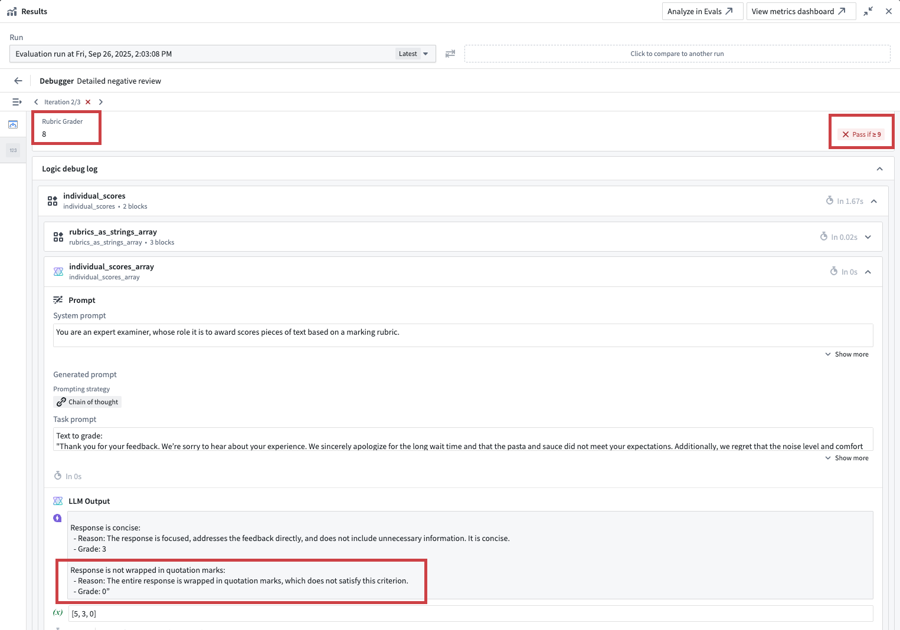
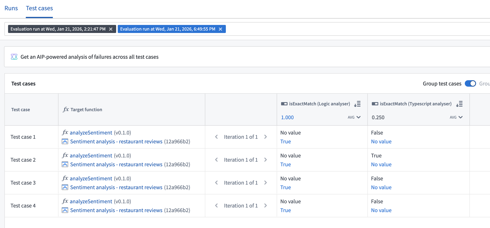

Run results show how your functions performed against test cases and evaluation criteria. Result views are available in the AIP Evals application or the integrated AIP Evals sidebar in AIP Logic and AIP Chatbot Studio.
If you have configured pass criteria on your evaluators, AIP Evals will automatically determine a Passed or Failed status for each test case. The results page displays the overall pass percentage across all test cases.
In some cases, you may want to investigate a specific test case result further. For these cases, the debug view is available. This view provides execution traces, input/output data, and error messages for individual test cases so you can understand your function outputs and evaluator results.
There are multiple ways to open the debug view for a test case. You can do it from AIP Evals, AIP Logic, or AIP Chatbot Studio.


The debug view provides detailed information about test function execution and evaluator results. It allows you to:


Some evaluators surface additional context as Debug outputs in the evaluator tab. For example, the built-in LLM-as-a-judge evaluator returns the model's reasoning as a debug output, helping you understand why it reached a specific verdict.
If you write custom evaluators, these can also produce debug outputs. Any string values a custom evaluator returns alongside its metric outputs appear as Debug outputs, providing additional context such as reasoning, intermediate values, or diagnostic information.

If you build a custom function evaluator with AIP Logic, you can additionally access the native Logic debugger. This helps you understand why the evaluation produced a specific result, which is particularly helpful when using an LLM-as-a-judge in your evaluator.
In the example shown in the screenshot below, the custom function rubric grader evaluator did not pass, because the result of 8 did not cross the defined minimum threshold of 9. Looking into the Logic debugger, we can see that the LLM judge only awarded 8 points because the response was wrapped in quotation marks. To earn a higher score, we will need to improve our prompt.

When your evaluation suite has multiple target functions configured, you can select and compare results from runs across different targets in AIP Evals. This is useful for analyzing how different function implementations perform on the same test cases.

You can use AI FDE to analyze failing test cases, identify root cause patterns, and receive suggestions to improve your prompts.
AI FDE will open in a new tab with the context of your run results. For more information on AI FDE, see the AI FDE documentation.